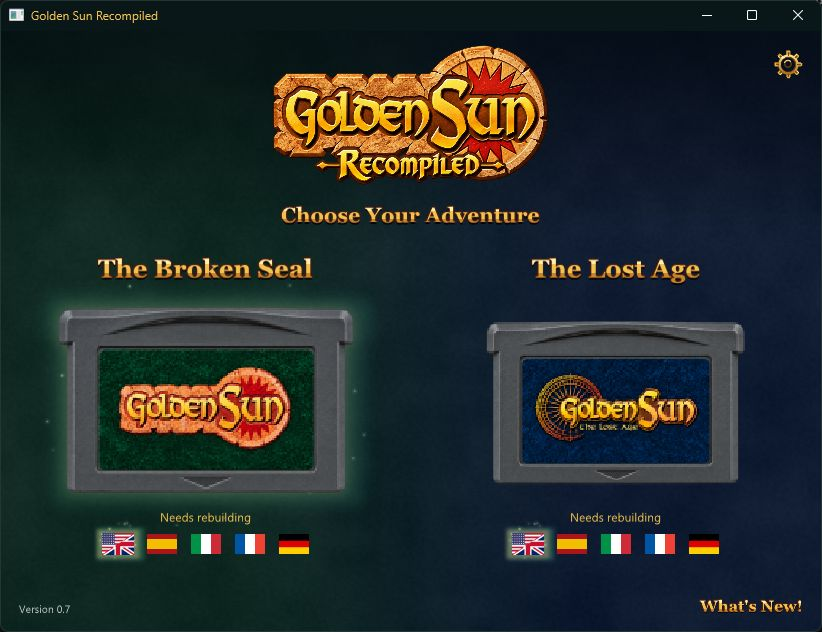
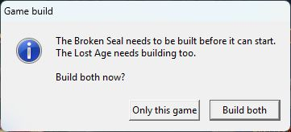

Before you start · Have your own .gba ROM for the game and language you want to play. Supported versions are USA/Europe (English), Spanish, Italian, French and German.
-
Download the ZIP for your system
Use the Windows or Linux download on the homepage. On Steam Deck, pick Linux and switch to Desktop Mode for setup.
-
Extract the whole ZIP
Extract it to a folder you can write to. Keep the included folders beside the launcher.
-
Open the launcher
Run GoldenSunLauncher.exe on Windows or GoldenSunLauncher on Linux and Steam Deck. Linux needs SDL2 and OpenGL. If SDL2 is missing, install it through your distribution’s package manager.
-
Pick your game and language
Click the flag below The Broken Seal or The Lost Age, then select that game’s cartridge. Accept the preparation prompt and select your matching .gba file when asked.

Choose a flag under the cartridge, then click the cartridge. 
If both games need setup, choose Only this game or Build both. -
Wait for first-time setup
The launcher prepares the game on your PC and shows its progress. Select the cartridge again if the game hasn’t opened when setup finishes. After that, select the cartridge to play.
-
Play and set up your controls
Press F1 for video, audio and controls. To set up the other game, repeat from step 4 with its own ROM.

Back up the Saves folder to keep your in-game saves and savestates. See the FAQ for updates and help.